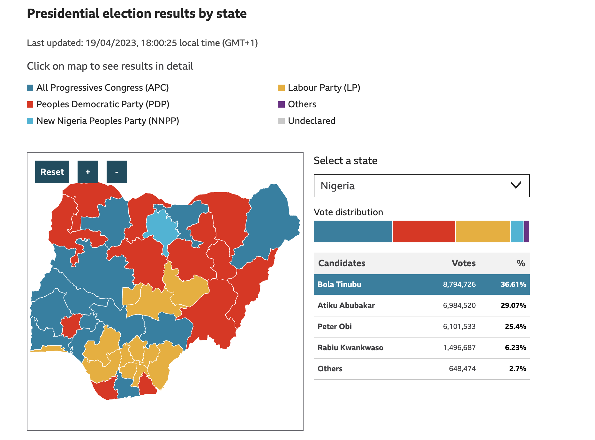
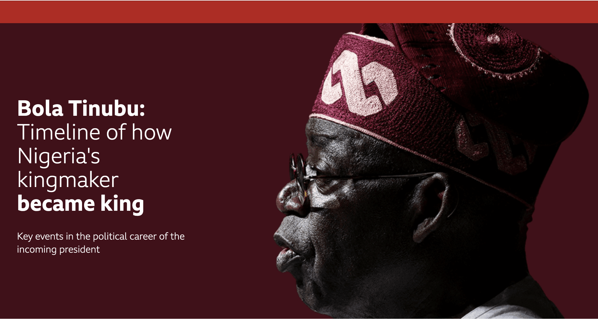
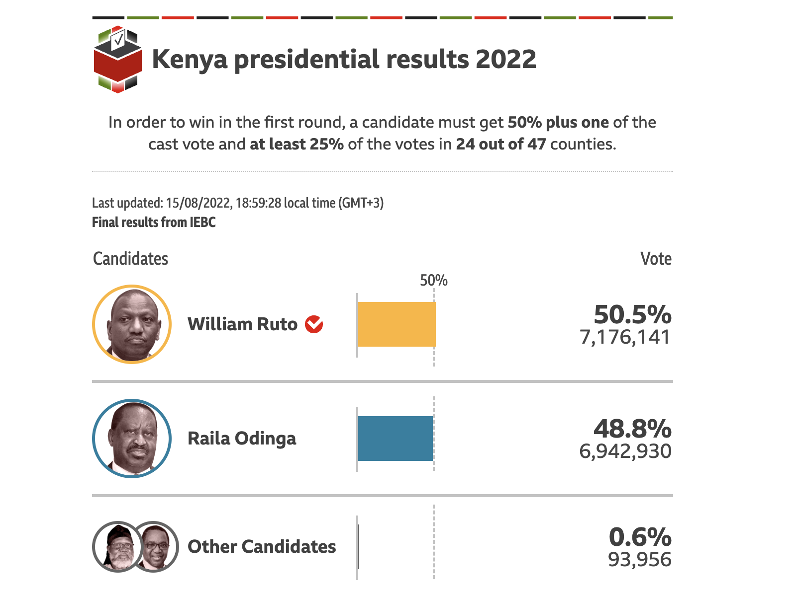

Trump meets five African leaders
Explainer on why them, and why now.
Features, data journalism, TV, radio, and multimedia productions translated to over 42 languages.
Explainer on why them, and why now.

Nigeria has 'enough problems' of its own, FM says

They avoid public places, including churches and schools
Some of the countries have caved in.

Why African countries are cutting ties with the West and courting Russia

What it means for the troubled Sahel region.

'I have nowhere to go'

Julius Maada Bio sworn in as opposition cries foul.

Nigeria election results 2023: Up-to-date results of presidential and parliamentary races.

Bola Tinubu: Timeline of how Nigeria's kingmaker became king.

Nigeria election 2023: Charts that explain the nation.

Data-driven journalism breaking down governance and economic issues.

Why is there fuel hike in Nigeria?

Nigeria accuses Briton of treasons.

Why did Guinea's military junta dissolve government?

How Senegal came to dominate African football.
It may keep President Touadéra in power for life.

Guinea Bissau teachers angry over salary suspension.

Nigerian Civil Service Ghost Worker Menace.

How petrol price soared in Benin after Nigeria moves to scrap fuel subsidy.

How petrol price soared in Benin after Nigeria moves to scrap fuel subsidy.

How are so many prisoners escaping in Nigeria?